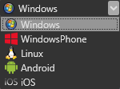
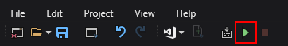
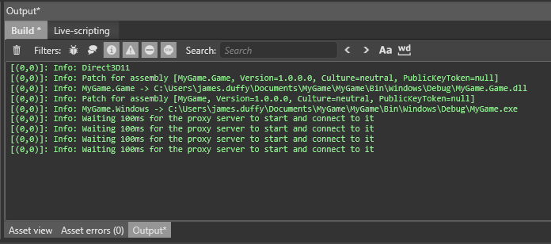
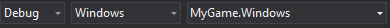
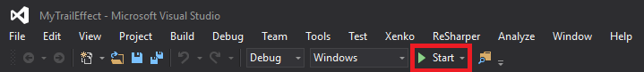
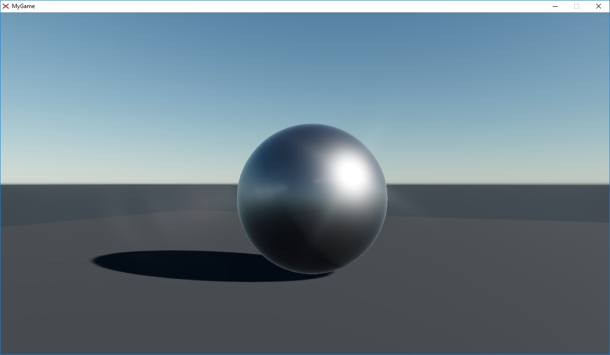
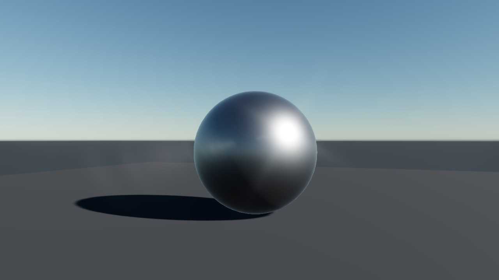

Запуск игры
Начинающий
На этой странице объясняется, как запустить игру с помощью Game Studio или Visual Studio.
Запуск игры из Game Studio
Note
Game Studio не может запускать игры для платформ Windows Store или UWP (Universal Windows Platform). Чтобы запустить игру для этих платформ, используйте Visual Studio (см. ниже).
На панели инструментов выберите целевую платформу.

Note
Вы можете выбрать только те платформы, которые вы выбрали в диалоговом окне Создать новую игру при создании проекта. Чтобы добавить дополнительные платформы в проект, см. Добавление или удаление платформы.
Чтобы запустить игру, нажмите на панели инструментов или нажмите клавишу F5.

Окно вывода (Output) показывает ход сборки.

После завершения сборки ваша игра запустится на выбранной платформе.
Запуск игры из Visual Studio
В Game Studio на панели инструментов нажмите (Открыть в IDE (Open in IDE)) для запуска Visual Studio.
На панели инструментов Visual Studio установите соответствующий проект в качестве запускаемого.

Конфигурация стартового проекта обновляется автоматически.
Tip
Вы можете увидеть свои проекты в Solution Explorer справа. Расширения имен файлов проектов идентифицируют платформу (например, .Android, .iOS и т.д.).
Убедитесь, что конфигурация и платформа полностью соответствуют вашим ожиданиям.
-
Чтобы запустить игру без отладки, нажмите Ctrl + F5.
Чтобы запустить игру с отладкой, нажмите Start или клавишу F5.

Удаление границ
По умолчанию игра запускается в окне с границами.
| С границами | Без границ |
|---|---|
|  |  |
Чтобы запустить игру в окне без границ, используйте:
Game.Window.IsBorderLess = true;
Например:
using Stride.Engine;
namespace MyGame
{
public class MyScript : StartupScript
{
public override void Start()
{
base.Start();
Game.Window.IsBorderLess = true;
}
}
}